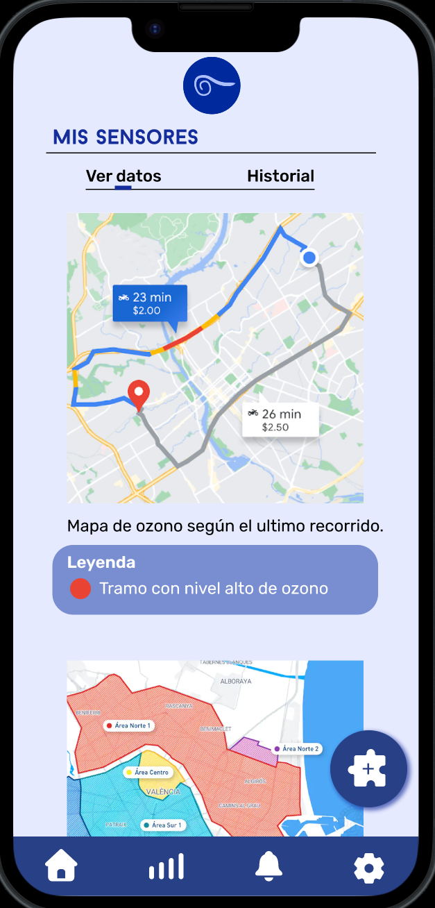

LLEVA AITHER CONTIGO
Es una experiencia que empieza en tu Ayuntamiento, donde puedes solicitar tu sensor personal, funciona con dos partes muy simples: un pequeño dispositivo que puedes llevar contigo a donde vayas y una app en tu móvil, el dispositivo detecta el aire a tu alrededor y envía esa información a la app.
En la app donde puedes ver esa información en mapas fáciles de entender. Así, puedes ver al instante cómo es la calidad del aire en tu casa, en tu paseo al trabajo o en el parque.

Empieza a medir en 4 pasos:
1
Para obtener el dispositivo sensor, debes realizar una solicitud gratuita desde la página del Ayuntamiento de tu localidad.
2
Una vez ya tengas el dispositivo sensor, descárgate la app, puedes búscala como 'AITHER' en la App Store o Google Play o haciendo clic en los links de abajo. Es gratuita y es la plataforma donde verás todos tus datos.
3
Una vez instalada, ábrela y completa el proceso de registro para crear tu perfil personal. ¡Es rápido y seguro!
4
Cuando terminas el proceso de registro, la app te llevará a una pagina para que puedas vincular tu sensor. Es importante que tengas el sensor encendido y a través de una lectura del QR del sensor se conectará de manera automática.